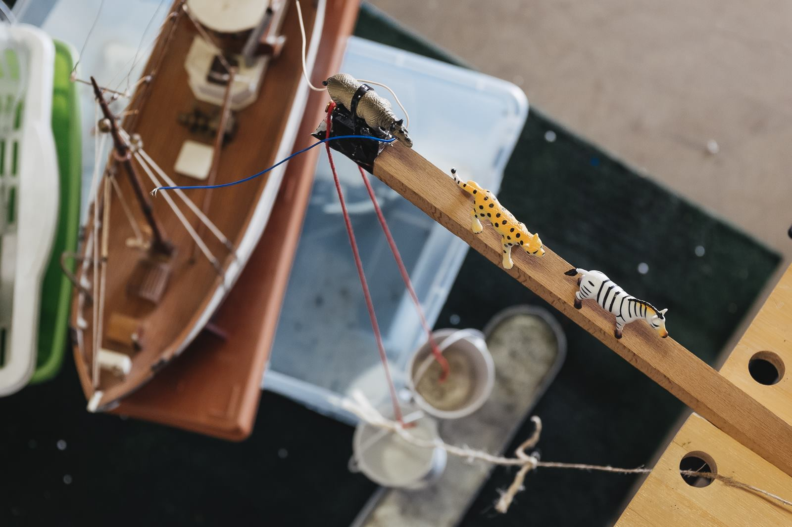

Machien
Honderden schakels om iets heel eenvoudig te doen, dat zijn Rupe Goldberg machines. Denk aan een domino blokjes die omvallen, maar dan met brandende koorden en vliegende televisies. De heren van OK GO, verheven dit bouwen tot kunst en we geven ze geen ongelijk. Machien doen we graag samen met heel veel mensen van allerlei pluimage. Die ene keer was dat vooral samen met Het Entrepot.


